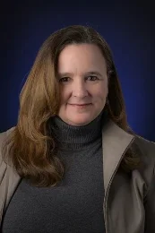
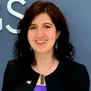
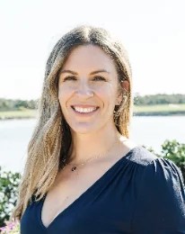
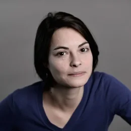
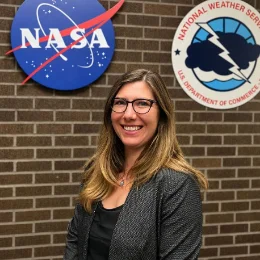
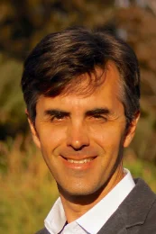
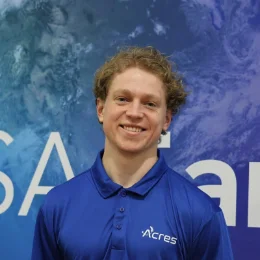
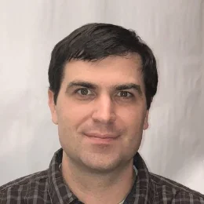

.jpeg)

.png)

.png)
.png)

The NASA Team
NASA Headquarters & NASA Acres
.jpeg)
Dr. Nicola "Nicky" Fox
Associate Administrator, Science Mission Directorate, NASA Headquarters
As the Associate Administrator for the Science Mission Directorate, Dr. Nicola Fox directs roughly 100 NASA missions to explore the secrets of the universe — missions that use the view from space to assess questions as practical as hurricane formation, as enticing as the prospect of lunar resources, as amazing as behavior in weightlessness, and as profound as the origin of the universe. As NASA's head of science, she creates a balanced portfolio of carefully chosen missions and research goals to enable a deep scientific understanding of Earth, other planets, the Sun, and the universe.
Dr. Fox joined NASA in 2018 as Director of the Heliophysics Division, overseeing the agency's efforts to study the Sun and how the solar wind affects Earth and other planets. Before NASA, she was chief scientist for heliophysics at the Johns Hopkins University Applied Physics Laboratory and project scientist for NASA's Parker Solar Probe. Her honors include the American Astronautical Society's Carl Sagan Memorial Award (2021) and NASA's Outstanding Leadership Medal (2020). She earned her B.Sc. and Ph.D. from Imperial College London and an M.S. from the University of Surrey.

Dr. Karen M. St. Germain
Earth Science Division Director
Dr. St. Germain is the Division Director of the Earth Science Division, in the Science Mission Directorate at the National Aeronautics and Space Administration (NASA) Headquarters. She provides executive leadership, strategic direction, and overall management for the entire agency's Earth Science portfolio, from technology development, applied science, research, mission implementation and operation.
Prior to coming to NASA, Dr. St. Germain was the Deputy Assistant Administrator, Systems (DAAS), for NOAA's Satellite and Information Service, guiding the ongoing development and deployment of NOAA's two major satellite programs, the COSMIC-2 mission, and the Space Weather Follow-On. She previously served as Director of NOAA's Office of Systems Architecture and Advanced Planning, and from 2011 to 2016 in the Space, Strategic and Intelligence Systems Office in the Office of the Under Secretary of Defense, where she led the DoD 2014 Strategic Portfolio Review for Space.
Dr. St. Germain had a successful research career at the University of Massachusetts, the University of Nebraska, and the Naval Research Laboratory — performing research aboard ice-breakers in the Arctic and Antarctic, flying through hurricanes on NOAA's P-3 airplanes, and measuring glacial ice on a snowmobile traverse of the Greenland ice sheet. She holds a B.S. in electrical engineering from Union College, a Ph.D. in electrical engineering from the University of Massachusetts, and an M.S. in National Security Strategy from the National War College.
Dr. Tom Neumann
Deputy Director, Earth Sciences Division, NASA Goddard Space Flight Center
Tom Neumann became the Deputy Director of the Earth Sciences Division at NASA Goddard in September 2022 where he helps oversee and guide the incredibly diverse portfolio of research, flight, and modeling projects. Tom's scientific work at Goddard has focused on ICESat-2, the next-generation laser altimeter which launched in 2018. Tom now serves as the ICESat-2 Project Scientist, after serving as the Deputy Project Scientist during the development and implementation stages of ICESat-2 from 2008 to 2018. He also served as the Cryospheric Sciences Lab Chief from Jan 2020 through October 2021. His research included both theoretical and experimental studies of the chemical, physical, and thermodynamic properties of polar snow and ice. He has been involved extensively in field work on the Greenland and Antarctic ice sheets, leading four expeditions and participating in five others between the two poles. Past work has involved studies of snow chemistry on the East Antarctic plateau and calibrating ICESat altimetry data using ground-based GPS surveys in Antarctica.
Tom joined NASA Goddard Space Flight Center in October 2008. Prior to that, he was an assistant professor in the Geology Department at the University of Vermont. He remains an Affiliate Assistant Professor in Earth and Space Sciences at the University of Washington. He earned a B.A. in geophysical science from the University of Chicago, and a Ph.D. in geophysics from the University of Washington.

Emily Sylak-Glassman, PhD
Deputy Associate Director for Earth Action, Earth Science Division
Dr. Emily Sylak-Glassman is the Deputy Associate Director for Applied Sciences within the Earth Science Division at NASA Headquarters, where she works to apply NASA's knowledge of Earth science to benefit people and the planet, managing a broad portfolio of efforts that develop practical applications from satellite data. Previously she was a senior policy analyst at NASA's Office of Technology, Policy, and Strategy, and before NASA worked at the Science and Technology Policy Institute with the White House Office of Science and Technology Policy. She holds a Ph.D. in chemistry from UC Berkeley and B.S. degrees in chemistry and biological chemistry from the University of Chicago.
Cordelia Hiers Brady
NASA Earth Action Agriculture Program Coordinator
As Agriculture Program Coordinator at NASA, Cordelia supports Earth Action's Ag Program in managing and developing innovative and sustainable projects that address food and agriculture challenges, with a decade of experience working with funders, researchers, and farmers through public-private partnerships. She leverages communication, project leadership, and relationship-building skills to generate engaging content, build unique partnerships, and oversee daily management of the agriculture team's programs and events. She holds a master's degree in agricultural business and economics from Murray State University.

Alyssa K. Whitcraft, PhD
Founding Executive Director, NASA Acres · Research Professor, University of Maryland
Alyssa is a Research Professor in the Department of Geographical Sciences at the University of Maryland, College Park, and the founding Executive Director of NASA Acres, NASA's agriculture consortium focused on strengthening U.S. agriculture. Her passion for agriculture and her vision for NASA Acres as a program that centers agriculture producers grew out of her experience as a winery kid in California.
Prior to NASA Acres, she founded and continues to direct the Harvest Sustainable and Regenerative Agriculture Initiative, a 501(c)3 consortium of top scientists and innovators in remote sensing, modeling, agronomy, and soil science. Harvest SARA grew out of NASA Harvest, NASA's original food security and agriculture consortium, for which she was co-founding Deputy Director (2017–2023). She has also served as Programme Scientist for the G20 global agriculture monitoring initiative (GEOGLAM) and as agriculture lead for the Committee on Earth Observation Satellites for over a decade. alyssakw@umd.edu
Mike Humber, PhD
Deputy Director, NASA Acres · Associate Research Professor, University of Maryland
Michael Humber is an Associate Research Professor in the Department of Geographical Sciences at the University of Maryland, with a background in remote sensing, spatial statistics, and geographic data management. He is Deputy Director of the NASA Acres consortium, Data Lead for NASA Harvest, Lead Scientist for the Climate-Smart Agriculture component of the UMD Climate Resilience Network, and a member of the UMD-NASA Fire Science Team.
His current work focuses on developing and distributing satellite-based data products that improve the quality and availability of data to agricultural decision-makers and farmers, leading a team that builds web/mobile apps and data pipelines on high-performance computing and cloud-native architecture. He also supports algorithm development and validation for the NASA MODIS and VIIRS burned-area products.
Allison Bredder, PhD
Strategic Engagement Officer, NASA Acres
As Strategic Engagement Officer at NASA Acres, Allison helps build connections between Earth observation science and the agriculture community to co-create tools that use satellite data to support everyday decisions on the farm and strengthen resilience to climate challenges. She is also a Postdoctoral Associate in the Department of Geographical Sciences at the University of Maryland, where her research focuses on the health impacts of wildfire smoke using remote sensing, machine learning, and epidemiological methods. Her broader expertise spans optical remote sensing, data visualization, and science communication.
Ignacio Ciampitti
Professor of Agronomy, Purdue University · Co-Director, IDAAS (Oklahoma portion only)
Ignacio Ciampitti, a quantitative agronomist focused on the integration of digital agriculture in complex farming systems, is co-director of Purdue University's Institute for Digital and Advanced Agricultural Systems (IDAAS) and a full professor of agronomy. He was previously a founding director of the Institute for Digital Agriculture and Advanced Analytics at Kansas State University. With degrees from the University of Buenos Aires and a Ph.D. in agronomy from Purdue, his research integrates crop eco-physiology and plant nutrition with data science, remote sensing, and crop modeling tools. He serves as associate editor-in-chief for the European Journal of Agronomy and on several other editorial boards.
Kaiyu Guan, PhD
Chief Scientist, NASA Acres · Levenick Endowed Professor, University of Illinois Urbana-Champaign
Kaiyu Guan is a Levenick Endowed Professor in agroecosystem sensing and modeling at UIUC, a Blue-Waters Professor in Supercomputing at UIUC-NCSA, Founding Director of the Agroecosystem Sustainability Center, and Chief Scientist of the NASA Acres Consortium. His research group uses advanced process models, satellite sensing technology, fieldwork, and artificial intelligence to address how climate and human practices affect crop productivity, water resources, ecosystem functioning, and environmental sustainability.
His group applies that work to real-life problems: large-scale crop monitoring and forecasting, greenhouse gas quantification, agricultural policy design, water management, and global food security. His name ("Kaiyu") was given by his grandfather, carrying the hope that he would be an astronaut exploring the universe.

Natacha Kalecinski, PhD
Assistant Research Professor, University of Maryland
Natacha Kalecinski earned her Ph.D. in atmospheric science at the Ecole Polytechnique, Paris, in 2015, where her research centered on solar irradiance forecasting based on the formation and dissipation of clouds over tropical islands. At the University of Maryland's Department of Geographical Sciences she works in the SALSA team with Sergii Skakun and Jean-Claude Roger, focusing on yield variability assessment from national to local level to improve crop yield forecasting. Since 2021 she has led operational yield forecasting development for several countries; as part of the NASA Harvest team, her research on the impact of the war in Ukraine on crop production was featured by Bloomberg and NASA Earth Observatory: "Larger Wheat Harvest in Ukraine Than Expected" and "Measuring War's Effect on a Global Breadbasket".

Kait Lemon
Agriculture Trainer and Partnership Specialist, NASA ARSET & EarthRISE
Kait Lemon is a natural resources professional, geospatial analyst, and seventh-generation farmer, with more than a decade of experience working in applied sciences spanning forestry ecology, agriculture, and conservation program management. She currently serves as the Agriculture Trainer for the NASA Applied Remote Sensing Training Program (ARSET) and as a Partnership Specialist with NASA EarthRISE Developers Academy. In this nexus capacity building position, she supports the development and expansion of remote sensing applications and training for agricultural applications. Her work focuses on translating NASA Earth observations into actionable tools and decision-support resources for state and local partners across the United States.
As a former Conservation District Board Member for Berrien County CD in Michigan, Lemon has been a longtime supporter of conservation districts and their community level impact. Throughout her career, Lemon has remained deeply committed to applied conservation, collaborative land stewardship, and expanding the practical use of remote sensing technologies in natural resource management and agriculture.

Forrest S. Melton
Senior Research Scientist, NASA Ames Research Center
Forrest Melton is a Senior Research Scientist with the Earth Sciences Division at NASA Ames Research Center, serving as Associate Program Manager for Water Resources and Agriculture with the NASA Applied Sciences Program and NASA Project Scientist for OpenET. His research focuses on applications of satellite data to improve management of natural resources, remote sensing of evapotranspiration and agricultural water requirements, and ecosystem and carbon cycle modeling.
Forrest holds B.S. and M.S. degrees in Earth Systems Science from Stanford University and has authored over fifty papers and book chapters. In 2022 he was awarded the NASA Exceptional Public Service Medal for advancing the use of remotely sensed ET data in water resources management. Since 2003 he has worked on frameworks including OpenET, SIMS, the NASA Earth Exchange, and TOPS.

Jacob Orser
Program Support Specialist, NASA Acres
Jacob Orser is a Program Support Specialist at NASA Acres. He received his education from Macalester College, where he studied geography and economics with an emphasis on food, agriculture, and society. His work includes analysis of remote sensing to quantify crop quality as well as estimations of supply elasticities and farmers' indifference curves. Driven by a passion for knowledge transfer and education, his work at NASA Acres focuses on bridging the gap between cutting-edge research and practical applications for farmers, researchers, and policymakers.
Faith Riensche
NASA Acres FIAT Liaison · Purdue University Research Assistant
A sixth-generation farmer from Iowa, Faith is the liaison for the NASA Acres Farm Innovation Ambassador Team (FIAT) and a research assistant in the Ciampitti Lab at Purdue University. She earned both her B.S. in 2025 and M.S. in 2026 with a focus on food and agriculture from Stanford University.

Alex Ruane, PhD
Co-Director, NASA GISS Impacts Group · AgMIP Science Coordinator
Dr. Alex Ruane is a Research Physical Scientist at the NASA Goddard Institute for Space Studies and an adjunct Associate Research Scientist at the Columbia University Center for Climate Systems Research. He serves as Research Coordinator and Climate Team Leader for the Agricultural Model Intercomparison and Improvement Project (AgMIP), an international, transdisciplinary project connecting climate science, crop modeling, and economic modeling to assess regional agricultural impacts of climate change and world food security.
His research uses climate and impacts assessment models to examine the influence of climate variability and change on agriculture, water resources, urban areas, infrastructure, energy, and human health. He leads the Coordinated Climate-Crop Modeling Project (C3MP) and developed the AgMERRA climate forcing dataset. He conducted his doctoral work at the Scripps Institution of Oceanography and holds a B.S. in atmospheric science from Cornell University.
Christopher Thorne
Earth Science Division Communications · NASA Headquarters
With 35 years of experience in media, policy and strategic communications, Chris Thorne supports outreach and message development for NASA's Earth Science Division as an independent sub-contractor. He started his career in journalism at local newspapers in New York's Hudson Valley before joining the Associated Press, where as correspondent he covered agriculture around the country and in Washington, DC. He then served as chief of public affairs and communications for U.S. Sen. Kent Conrad of North Dakota.
Thorne led public affairs for Growth Energy, developing the $5 million/year American Ethanol partnership with NASCAR, then ran communications and public affairs for the Beer Institute. In 2018 he launched INDEPENDENT Public Affairs, LLC, whose clients include NASA, NOAA, the CDC, and others. A graduate of Pace University, he lives in Silver Spring, Md.